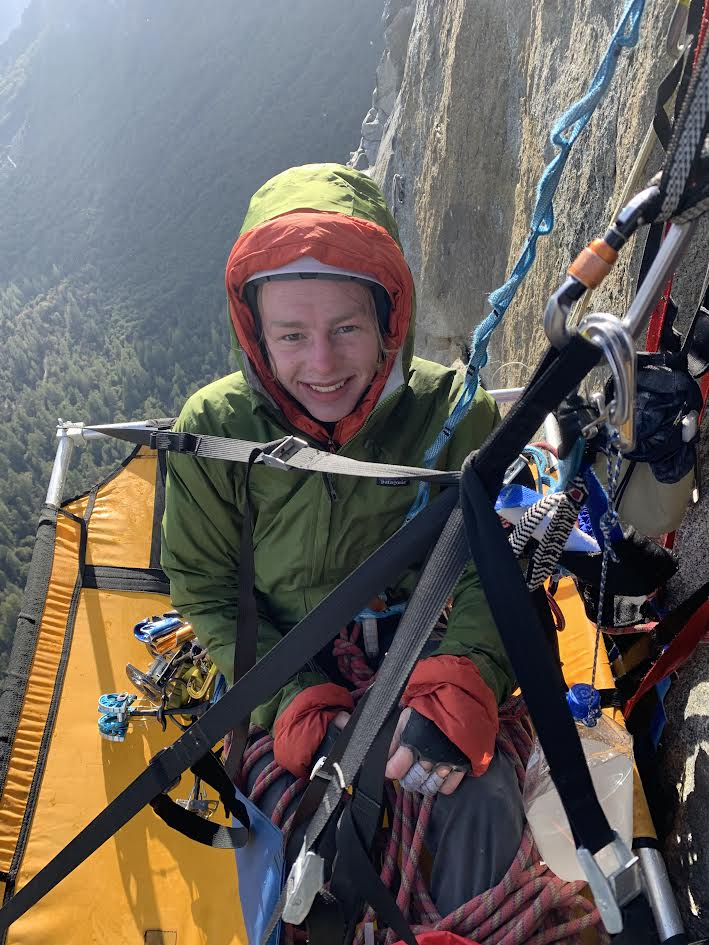

Learn more about The Nose on Wikipedia
Follow along with route descrptions here
The Nose, El Capitan - Yosemite Valley
Monday, April 12 2021
This was the day. I had been practicing with my cousin Matt for about a year, fine-tuning our systems and practicing everything we needed to know for the wall. We had never spent a night on a wall, but we were confident that we had the skills we needed. Matt had a very small window of time; His wife was due to deliver their second child in just 2-3 weeks,and he was applying to med school. He had already purchased a plane ticket for early Friday morning, and so the pressure to be quick was a constant in our minds.
I got to the valley around noon, and started to organize our gear and pack it into the haul bag. Matt flew into the Fresno airport then made his way to The Valley. He showed up in the afternoon, and without any spare time for sight seeing or extra practice, we started up. Relatively few people can claim that their first and only climb in Yosemite is El Capitan.
Our plan was to climb the first four pitches to Sickle Ledge that afternoon, then “fix” down to the ground. Fixing is a practice where you essentially leave a checkpoint accessible from the ground. The next morning, instead of re-climbing what we had already done, we would simply ascend our ropes to our highpoint. That way, we could make use of our limited time on Monday.
 Pitch 3
selfie from low on the route
Pitch 3
selfie from low on the route
Tuesday, April 13 2021
After an early breakfast, we ascended our ropes around 7am. I had previously climbed from the ground to Dolt Tower, and was somewhat familiar with the terrain and exposure. Right above Sickle Ledge, the route goes around a corner where the slabby wall below you turns to overhang, and starts getting buffeted by the wind. I was expecting to be freeing everything 5.11 and below to save time, but I’ll admit, with the exposure and huge loads of gear, I wasn’t freeing much at all. I can only imagine how Matt felt having never climbed in Yosemite…
The first few pitches off Dolt Ledge, we moved a little slow. We had done plenty of practice hauling, but had never done lower-outs as large as were required for The Nose. Thankfully, we were the only ones on the whole route! That made it a special experience, as we were expecting to essentially wait in line our whole way up the wall like a Disneyland ride. We got past one of the bigger 50ft lower-outs, and started on our way up the Stove Leg Cracks.
The Stove Legs got their name from the first climbers to ascend them. Warren Harding and his team were surprised by how wide the 3’’ cracks were, and so Bill Feuerer designed new gear by cutting the legs from wood stoves. Matt led one of the pitches in the crack system, and was back-cleaning heavily to save needed gear for later (back-cleaning involves leap-frogging two pieces of gear repeatedly, leaving fewer pieces below you to catch a fall). Upon reaching a piece of gear that had been left in the crack, he clipped to it, stood up, and removed the piece below him. Almost immediately afterwards, the gear he was standing on “exploded”, as Matt described. This resulted in a 50 foot fall, and a VERY surprised belayer. Luckily, Matt got away with nothing but a few bloody knuckles.
 Climbing the Stovelegs
Climbing the Stovelegs
The rest of the day went on with little incident. We reached El Cap Tower, our camp for the night, a few hours after sunset.
Wednesday, April 14 2021
Enjoying breakfast on El Cap TowerWe woke up at 6:30 to a beautiful sunrise. After a Cliff Bar for breakfast, I made my way up to the texas flake. This is one of the more unique pitches of The Nose. It’s a 50ft squeeze chimney, meaning it's just big enough to fit your body in if you didn’t eat too much for breakfast, and you hold your breath. It starts small, and slowly widens until you have your back on one wall and your feet on the other. To make the experience even more interesting, there is only one bolt for protection halfway up. I found a brand new brush, which I still use today. As I was about to start up, it started to snow…
I didn’t feel comfortable climbing a friction dependent pitch, where falling isn't an option, in snow. So I retreated to El Cap Tower, where we sat out the snow. An hour later the sun came out and I was back in the Texas Flake. We had a beautiful view of the moisture evaporating off the walls all the way across the valley, and rushing up past us.
"Christmas on El Cap" - Matt's description of the snowAfter the Texas Flake comes the famed “King Swing”. You climb to a point where there are no more climbable features in the rock, necessitating a large swing to the closest crack system. We had walkie talkies, and so did my father, who was watching us from the ground. With the advice of an experienced climber named Dan (thank you!), we were able to make quick work of the swing.
King Swing as seen from the meadowWe made our way up to the Grey Bands with little difficulty, only to be daunted by the sight of more storm clouds rushing in. It might be worth admitting now that neither of us had closely followed the weather before the trip, knowing that it was Matt’s only opportunity, prepared to face whatever met us. Because of this, we were not prepared for storms. Our sleeping ledge had no rain fly, meaning we had no escape from the elements. Adding insult to injury, Matt brought no water-proof jackets with him. Luckily, it was not rain or snow, but hail. That meant that most bounced off of us, and we were able to stay somewhat dry-despite remaining VERY cold. We set up our ledge and, not wanting our sleeping bags to become wet and unusable, cuddled together underneath our ropes to wait out the hail.
 After waiting out the stormAs a side note, we had been in good communication with friends and family while on the wall. Like I said, my father communicated from the Valley through a walkie-talkie throughout the trip. When the storm came, we received no queries regarding safety from my father. Instead, about halfway through the two hour hailstorm, we received a selfie from the Yosemite pizza parlor. Just to rub it in I guess…
After the skies cleared once more, we knew we had to make up lost time. Knowing that we climbed about half as far as we were hoping to climb that day, we continued well into the night, setting up camp at the start of the Great Roof Pitch.
Thursday, April 15 2021
Cleaning the Grat RoofToday was the last day. We knew that we couldn’t stop till we reached the top. Luckily, we had gotten into a good flow and were moving fast. Matt led the Great Roof like a champ, and I had a blast freeing the pancake flake. One pitch that I was nervous for was the aid crux of the route, called the Glowering Spot. It was a section of thin crack above a ledge, meaning you had to be careful about bigger falls - no walking away from a 50 footer unscathed like Matt’s on this section! I was pleasantly surprised that it was not too difficult.
 Climbing the Glowering Spot
Climbing the Glowering Spot
By this point we were used to the exposure, and were thoroughly enjoying ourselves on the wall. It was calm, quiet, and peaceful, and we agreed that there was definitely a reason that the ancient Prophets ascended mountains to talk to God. You just feel closer to Him up there. It’s also a nice time to reflect on life, and what is really important. I understand better now how the likes of Royal Robbins and Chongo Chuck were such deep thinking men.
The free-hanging haul bags give a good idea of the overhang of the wallI led the Changing Corners pitch. I hadn’t yet grown comfortable on cam hooks, and so I made the experience more difficult for myself by sticking to poor, small cams and nuts. As it grew dark, we prepared ourselves for another late night burning the midnight headlamp batteries.
I remember particularly disliking pitch 25, The Alcove. Perhaps it was because I didn’t properly extend my pieces, and ended up with gruesome rope drag. Or perhaps it was the fact that the crack was wet and dripping from the earlier storm. Either way, I climbed really slowly and it took a lot out of me. The whole time, I just kept telling myself that it was my last lead. After this, Matt would take us to the top. I had to finish in good style, and in good spirits.
Matt bravely started onto the final 200ft overhanging bolt ladder. I’ve heard that this part has spectacular exposure; below you there is nothing but 3,000 feet of air until the ground. For me, it was just a dark black abyss. It seemed like the rest of the world had disappeared. No sounds of the road below, no echoing shouts, just the sound of breathing and metal gear tinkling
Matt emerging from the Alcove. Note the wet streaks on the wall behind him.I waited at the last belay for what felt like an eternity. Matt started up around 9:50, and I got to the top at 1:00 am. For most of the route we averaged a pitch an hour, so I was quite worried as I sat in the darkness, ever conscious of the fact that we had been climbing for 18 hours. I tried to walkie-talkie to him, but mine had died. Yelling was no use, as my voice was just swallowed up in the void. All I knew was that I was still feeding rope, which meant he was still climbing. My only comforts were the Jolly Ranchers we brought along, singing to myself in the darkness, and the fact that slowly but surely, he was moving upwards.
I don’t remember any sense of glory and victory upon rounding the final lip to the summit. I just wanted to lay down on the hard granite, eat a few handfuls of trail mix, and go to sleep, and so I promptly did.
Summit photo the next morningI attended seminary through zoom the next morning from the summit, following which we began the trek down the east ledges. At some point along the climb Matt’s left shoe, which was clipped to the bottom of the haul bag along with his right one, had somehow unclipped and fallen to the ground. So Matt had to do the hike in one climbing shoe, which resulted in some impressive bruising. We reached the parking lot to a small group of friends and family who had watched us from the meadow, and my grandma running to give us a hug. She had brought along her raisin bars, my favorite dessert. After three days of trail mix and cliff bars, those tasted better than ever.
It was then, looking back up at El Cap from the ground, that I felt a sense of pride and gratitude for the experience. Now, each time I’m met with a view of El Capitan upon entering The Valley, I have a renewed sense of awe for the mountain. Sometimes it seems hard to believe that I actually did it.
We couldn't stop looking back up in aweThanks to everyone who supported us through lent gear, expertise, and stoke!